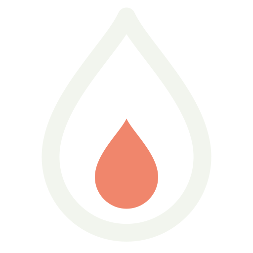

CRM-MG 73.571 · RQE 71.765
- Residência na UFMG
- Formada na Unimontes
Ferro baixo, cansaço, exame alterado: te ajudo a achar caminhos.
Agende pelo WhatsApp em qualquer horário.
- Pedido pelo WhatsApp, a qualquer hora
- Quartas à tarde, na Gastrus
- Particular e convênio
Meu caso é para hematologista? Estes quatro são.
Em cada um, a consulta termina em exame pedido ou decisão tomada.
Minha ferritina veio baixa, ou alta
Ferritina é o estoque de ferro do corpo. Baixa pode vir de perda de sangue, alimentação ou absorção. Alta tem outras explicações, e nem sempre é ferro demais. A consulta procura qual vale para você.
Meu hemograma veio alterado
Hemograma conta as células do sangue: glóbulos vermelhos, glóbulos brancos e plaquetas. Um valor fora da faixa ganha sentido ao lado dos exames anteriores. A Dra. Isabella compara e diz o que pede investigação e o que se acompanha.
Já tive trombose, ou tem casos na família
Trombose é um coágulo que se forma dentro da veia. Trombofilia é a tendência a formar esses coágulos. A consulta olha a sua história e a da sua família, e avalia se vale investigar.
Estou grávida, ou quero engravidar
Na gestação, o corpo pede mais ferro. Se há trombose na sua história ou na da família, vale conversar sobre isso antes e durante. O pré-natal segue com o seu obstetra; a consulta olha a parte do sangue.
Sinal de alerta não espera a consulta
Perna inchada e dolorida de um lado só, falta de ar de repente, dor no peito, sangramento que não para ou sangramento na gestação: procure o pronto-atendimento ou ligue 192.
Hematologista é médico de câncer?
Não só. E exame alterado tem mais de uma explicação.
Hematologia é a especialidade do sangue, e câncer é uma parte dela. Ferritina fora da faixa, anemia e trombose são outra parte, e são o que esta consulta olha. Qual explicação vale para o seu exame só se lê com a sua história ao lado. Se o medo é câncer, diga isso na consulta.
Ela acabou de se formar. Posso confiar? Terminou a residência em 2026. Cada registro se confere.
Ainda não há avaliações públicas. O que existe para conferir é a formação, com datas e registros.
-
Hematologia na UFMG · RQE 71.765
Residência em Hematologia e Hemoterapia na Universidade Federal de Minas Gerais, de março de 2024 a fevereiro de 2026.
-
Clínica Médica no HUCF · RQE 71.766
Residência em Clínica Médica no Hospital Universitário Clemente de Faria, da Unimontes, de março de 2018 a fevereiro de 2020. Antes, graduação em Medicina pela Unimontes.
Para conferir, busque CRM-MG 73.571 no site do Conselho Regional de Medicina de Minas Gerais.

Meu médico já passou ferro. Preciso de hematologista? Ferritina que sobe e cai de novo pede outra pergunta: por quê.
Tomou ferro, a ferritina subiu e caiu de novo? Vale procurar o porquê, olhando exames e história lado a lado.
Seus exames antigos, lado a lado
Traga os hemogramas e as ferritinas de antes, para pôr ao lado do último resultado.
A sua história inteira
Você conta o que veio antes do exame, sem pressa.
O próximo passo definido
Você sai com os exames pedidos ou com a conduta escrita, e sabe quando volta.
Se eu mandar mensagem, o que acontece? Três passos, e o primeiro é só uma mensagem.
Você escreve no WhatsApp
A qualquer hora. Pode ser só uma pergunta, sem compromisso de marcar.
A recepção responde
A recepção da Clínica Gastrus manda o próximo horário de quarta e o valor da consulta.
Você vem à consulta
Na Clínica Gastrus. Leve os seus exames, inclusive os antigos, impressos ou no celular.
Ficou alguma dúvida? Cinco respostas antes de você escrever.
Quanto custa? Aceita convênio?
Atende particular e convênio. Qual é o seu plano, o valor e os horários livres a recepção confirma na conversa pelo WhatsApp.
Ela atende homem?
Sim. A consulta é a mesma para homens e mulheres, presencial.
Posso mandar o meu exame pelo WhatsApp para ela ver?
Não. Exame se lê na consulta, com a sua história ao lado. Pelo WhatsApp, a recepção marca o horário e responde sobre a consulta.
Preciso levar exames? E se forem antigos?
Leve todos os que tiver, de qualquer laboratório. Com os antigos, dá para comparar com o último.
Meu médico já pediu exames e receitou remédio. Ainda faz sentido marcar?
Faz, se a dúvida continua. Leve o que ele pediu e o que receitou: a consulta parte daí, e o seu médico segue acompanhando você.
Onde e quando ela atende? Na Clínica Gastrus, às quartas à tarde.
Consulta presencial, com horário marcado pela recepção no WhatsApp.
Clínica Gastrus
- R. Eng. João Antônio Pimenta, 163, Cidade Santa Maria, Montes Claros, MG
- Quartas, das 13h às 17h
Exame alterado tem caminho. Vamos achar o seu.
Escreva para a recepção da Clínica Gastrus. Pode ser só uma pergunta.